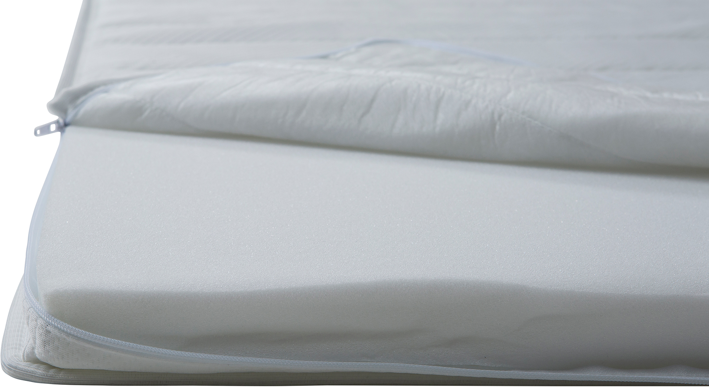
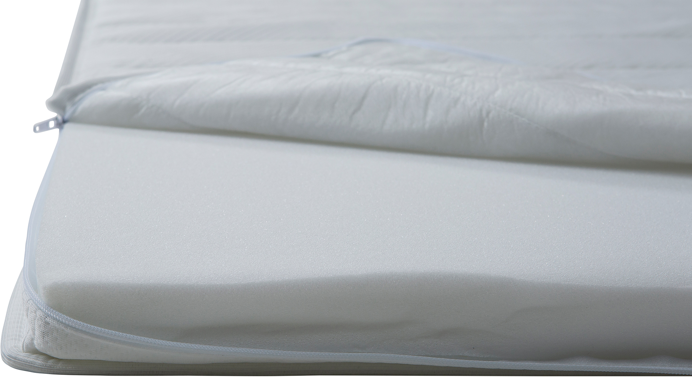

Moon Bronze Basic mattress topper 140x200x5cm
197753

 

Description
Experience enhanced sleeping comfort with the Moon Bronze Basic mattress topper from the NEST & LIVING collection. Designed to add an extra layer of softness and support to your existing mattress, this topper features breathable foam that adapts to your body shape for restful nights. Sized 140x200 cm and 5 cm thick, it fits most standard beds perfectly. The bronze tier ensures great quality and value for those seeking improved sleep ergonomics without compromising affordability. Its elegant light grey upper surface combined with a beige underside complements various bedroom styles subtly. Ideal for extending mattress life and enhancing comfort throughout the year.
Technical specifications
| Size | 140 × 200 cm |
|---|---|
| Thickness | 5 cm |
| Material | High-density breathable foam |
| Tier | Bronze |
| Color | Light grey with beige underside |